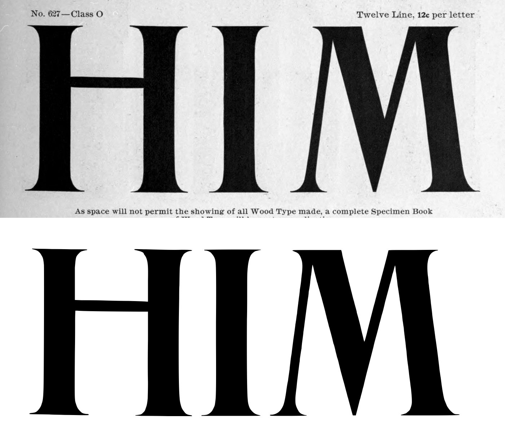
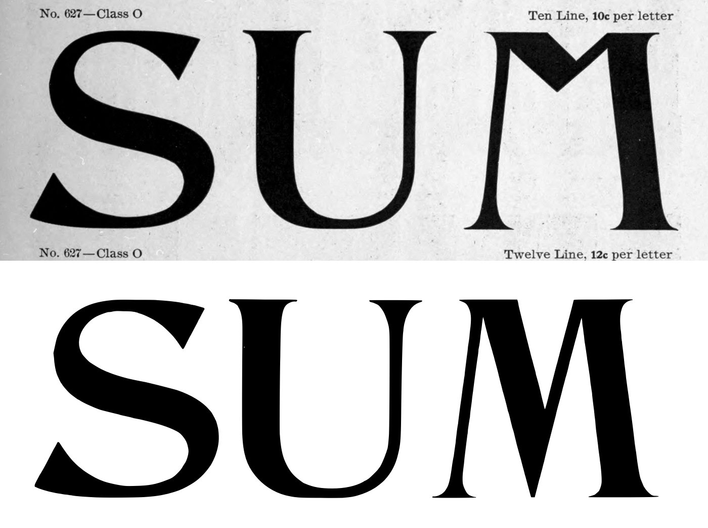
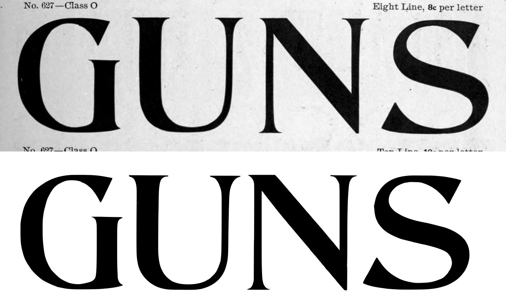
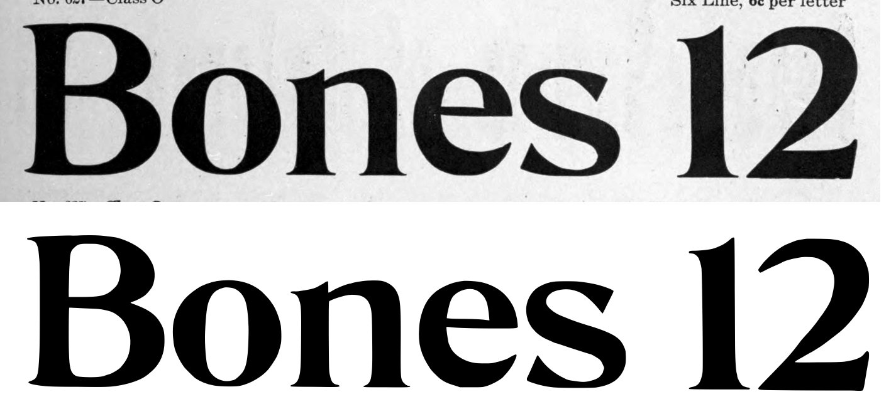
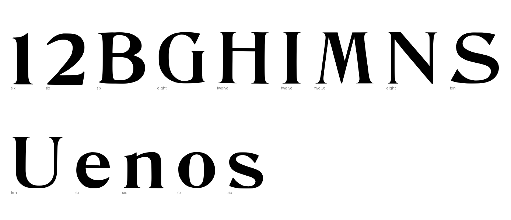
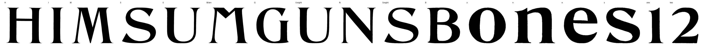

Gray letters are constructed, not traced.


0 warnings, 3 notes.
[
{
"level": "info",
"check": "specks",
"glyph": "M.ten",
"value": 2,
"note": "marks beside the letter were recorded, not cut"
},
{
"level": "info",
"check": "specks",
"glyph": "S.eight",
"value": 1,
"note": "marks beside the letter were recorded, not cut"
},
{
"level": "info",
"check": "specks",
"glyph": "two",
"value": 2,
"note": "marks beside the letter were recorded, not cut"
}
]
{
"889:twelve": {
"n_caps": 3,
"cap_height_px": 792,
"cap_source": "caps",
"baseline_px": 3342,
"baselines": {
"5": 3342
},
"glyphs": [
"H",
"I",
"M"
],
"stem_px": 147,
"scale": 0.88384,
"stem_units": 129.9
},
"889:ten": {
"n_caps": 3,
"cap_height_px": 663,
"cap_source": "caps",
"baseline_px": 2411,
"baselines": {
"4": 2411
},
"glyphs": [
"S",
"U",
"M.ten"
],
"stem_px": 40,
"scale": 1.05581,
"stem_units": 42.2
},
"889:eight": {
"n_caps": 4,
"cap_height_px": 527.5,
"cap_source": "caps",
"baseline_px": 1613.5,
"baselines": {
"3": 1613.5
},
"glyphs": [
"G",
"U.eight",
"N",
"S.eight"
],
"stem_px": 46.5,
"scale": 1.32701,
"stem_units": 61.7
},
"889:six": {
"n_caps": 1,
"cap_height_px": 396,
"cap_source": "caps",
"baseline_px": 945,
"baselines": {
"2": 945
},
"glyphs": [
"B",
"o",
"n",
"e",
"s",
"one",
"two"
],
"x_height_px": 278.5,
"figure_height_px": 397.0,
"stem_px": 75,
"scale": 1.76768,
"stem_units": 132.6,
"x_height": 492,
"figure_height": 702
}
}
{
"archive_id": "bookoftypespecim00barnrich",
"title": "Book of type specimens. Comprising a large variety of superior copper-mixed types, rules, borders, galleys, printing presses, electric-welded chases, paper and card cutters, wood goods, book binding machinery etc., together with valuable information to the craft. Specimen book no.9",
"creator": [
"Barnhart, bros. & Spindler, firm, type founders, Chicago",
"De Young family",
"De Young, Charles, 1881-"
],
"publisher": "Chicago, Barnhart bros. & Spindler",
"date": "[1907]",
"ppi": 400,
"url": "https://archive.org/details/bookoftypespecim00barnrich",
"copyright_status": "NOT_IN_COPYRIGHT",
"contributor": "University of California Libraries",
"leaves": [
889
]
}